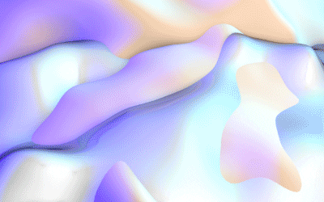

<a-scene id="3dScene">
    <a-assets>
      
      
    </a-assets>


    <a-light color="rgb(199, 128, 255)" position="-1 1 0"></a-light>
    <a-light type="ambient" color="rgb(199, 128, 255)" position="3 1 0"></a-light>

    <a-torus segments-radial="4"
             segments-tubular="200"
             radius=".1"
             radius-tubular=".01"
             rotation="-90 0 0"
             position="0 2.9 0"
             >
    </a-torus>

    <a-box id= "rect1" material="shader:gif; src:#metallic; opacity:.75; color:rgb(115, 255, 217)" position="0 1.9 1" height="1" width=".5" rotation="0 0 0">
     <a-animation attribute="rotation"
                  delay="0"
                  dur="8500"
                  to="0 360 0"
                  repeat="indefinite"
                  easing="linear">
      </a-animation>

      <a-torus segments-radial="4"
               segments-tubular="200"
               radius=".6"
               radius-tubular=".01"
               rotation="-90 0 0"
               >
      </a-torus>
    </a-box>

    <a-tetrahedron id= "tetrahedron1" position="0 .8 1" height="1" radius="1" material="color:rgb(23, 226, 189);">
     <a-animation attribute="material.color"
                  from="rgb(166, 139, 255)"
                  to="rgb(248, 167, 255)"
                  dur="1000"
                  repeat="indefinite"
                  direction="alternate"></a-animation>
      <a-animation attribute="rotation"
                  delay="0"
                  dur="5000"
                  to="0 360 0"
                  repeat="indefinite"
                  easing="linear">
                </a-animation>
          <a-torus segments-radial="4"
                   segments-tubular="200"
                   radius=".7"
                   radius-tubular=".01"
                   rotation="-90 0 0"
                   >
          </a-torus>
    </a-tetrahedron>

    <a-torus segments-radial="4"
             segments-tubular="200"
             radius=".7"
             radius-tubular=".01"
             rotation="-90 0 0"
             >
    </a-torus>


    <a-plane material="shader:gif; src:#soft_white" position="0 -.5 0" rotation="-90 0 0" width="2" height="2">
        <a-animation attribute="rotation"
                     delay="0"
                     dur="10000"
                     to="-90 0 360"
                     repeat="indefinite"
                     easing="linear">
         </a-animation>

       <a-cylinder id= "cyl1" position="1 0 .25" radius="0.25" height="2" material="shader:gif; src:#soft_white">
        <a-animation attribute="material.color"
                     from="rgb(118, 187, 251)"
                     to="rgb(204, 168, 255)"
                     dur="1500"
                     repeat="indefinite"
                     direction="alternate"
                 ></a-animation>
       </a-cylinder>
    </a-plane>


    <a-sky color="#ffe4fb"></a-sky>
    <a-entity position="0 0 5">
      <a-camera>
      </a-camera>
    </a-entity>

  </a-scene>
